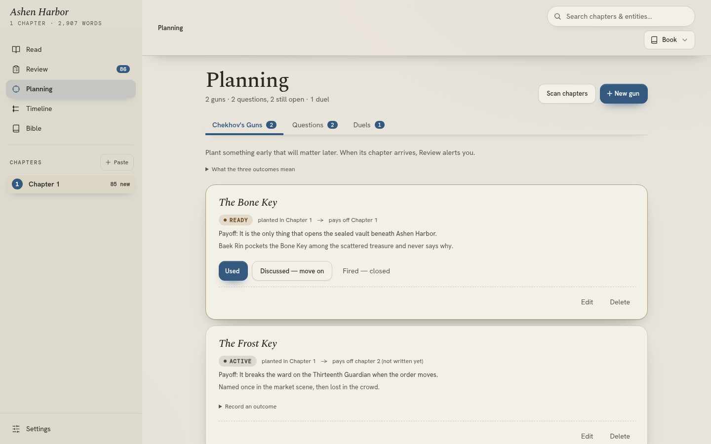
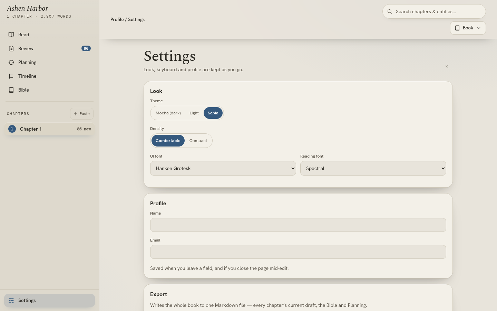
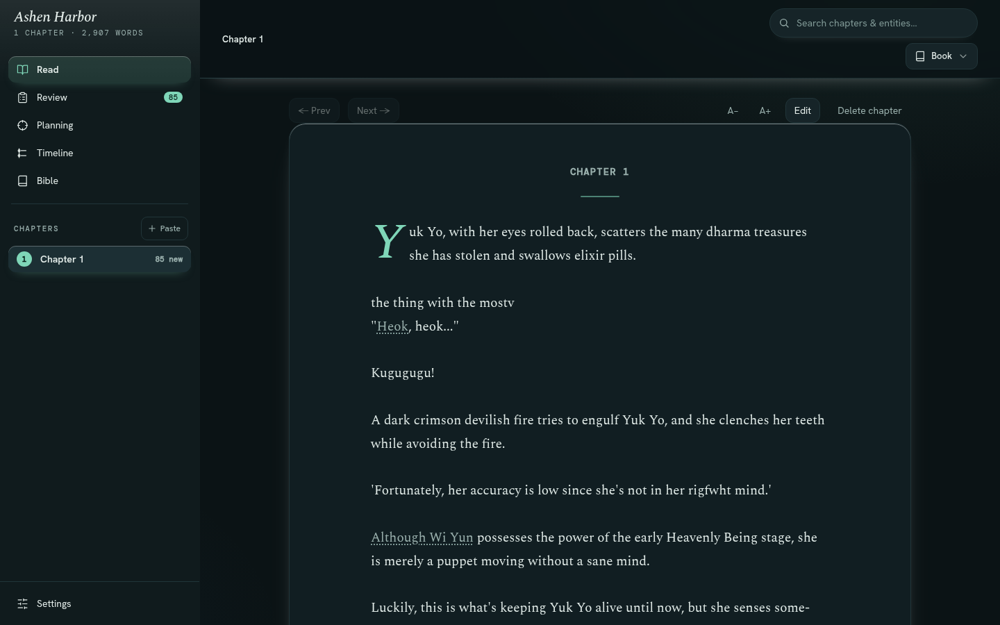

An offline story bible
Paste a chapter. Triage the names. Keep the bible in one file you own.
There is no DocWriter build for this system yet. The Windows and Linux downloads are in Other downloads below.
The Windows build is unsigned, so Windows shows “Windows protected your PC” the first time: More info → Run anyway.

Try it first
Open the sample book before you install anything.
One short chapter, already pasted, and 137 cards ready to browse. It is a real book file: open it in DocWriter with Book → Open book… and read the chapter beside the bible as it ships.
1 chapter137 cardsFive types332 KB file
The file is a plain SQLite database. Opening it uploads nothing and needs no install of its own.
The problem
The story outgrows the notes.
Three chapters in, the names start to drift. Was the harbourmaster Halden or Haldane? Which of the six notes files has the scene where the ferry burns? You mean to write it all down, and then you would rather be writing the book.
You also do not want to move the manuscript. It lives in Word, or Scrivener, or a folder of text files — wherever it has become home. No note-taking app has ever been worth moving the book out for.
So DocWriter asks for one thing: paste the chapter. It reads the names out of prose you already wrote and keeps the record beside it — not in an account, not in the cloud, in a file on your own disk.
The loop
Four steps, then back to the draft.
Every chapter takes the same short trip. The first time a name appears DocWriter asks about it; after that it links the name silently and stays out of the way.
-
 01 — Paste
01 — PastePaste a chapter
Paste the chapter into DocWriter; the text is stored as a revision and scanned for capitalised name candidates.
-
 02 — Triage
02 — TriageTriage the queue
Each candidate arrives with the sentence around it — Enter keeps it, 1–9 keeps it as a type, L leaves it for later and X ignores it.
- Enter keep
- 1–9 as a type
- ←→ change type
- L later
- X ignore
- Esc close
-
 03 — Cards
03 — CardsTyped cards
Keeping a name makes a card — Character, Location, Country, Organisation or Item — with any aliases and every appearance kept on a mention trail.
-
 04 — Read
04 — ReadRead with names linked
The reader shows the chapter with known names underlined in their type's colour, and names still to triage left dotted.
Features
Everything it does, and nothing else.
No dashboard to feed, no second place to keep your notes. Each of these is in the app as it ships.
-
Offline & local
No account, no sync, no telemetry, and no network calls beyond the localhost port the app serves itself. One SQLite file per book, on your disk.
-
One file per book
The Book menu holds four rows: New book…, Open book…, Export book file (.db) and Export as Markdown. About shows which file is open; Settings → Export writes Markdown for readers.
-
Paste-to-scan detection
Capitalised words become candidates. A bundled dictionary of about 275,000 words demotes the plainly common ones — a demotion, never a hard drop, so Grace and Rose survive. Dialogue attribution, type keywords and repetition promote the rest; weak names wait behind “Show more low-confidence”.
-
Triage
A candidate arrives with the sentence around it, the whole key legend, and a same-thing/different question when a name looks like one you already have. Same thing stores it as an alias; ignoring leaves an Undo line behind.
-
Typed cards
Five types, aliases, a mention trail per card, and optional tracking — off, reappearance or absence — against a gap threshold you set. A card that loses its last mention goes to Trash, not away.
-
Planning
Chekhov's guns, the questions the prose raises, and duels.

-
Timeline
The Map's story-day rail, and the authored Story chronology with its Day N badges.

-
Settings
Theme, density, profile, export, backup, and the keyboard — eleven shortcuts you can rebind.

Built for long books
A book that big stays open.
A 2,000-chapter, 5.0-million-word book settles at about 444 MB of memory.
The measurement is resident memory after the book has settled. The report calls it an upper estimate rather than a guarantee for every machine, which is the honest way to read it.
The current build passes 214 automated tests (npm test, 214/214), including the Windows run.
Three lights
Sepia to read by. Mocha at night.
Three themes ship with the app and are set per book. The reader above is Sepia; below are full 1440×900 windows of the same chapter in Light and Mocha, so the ink and the surfaces can be compared directly.


Both captures are the whole window, scaled down together. Compare the ink, the page and the panel surfaces, not the words.
Who it is for
A companion, not a word processor.
DocWriter does one job beside the draft. It is worth knowing what it will not do before you download it.
It fits if
- You write long fiction and keep the manuscript in Word, Scrivener or plain files.
- You want the story bible derived from the prose, not typed a second time.
- You would rather have one file on your own disk than an account in the cloud.
- You work on Windows x64 or Linux x64.
It is not
- A word processor: the manuscript never moves into DocWriter.
- Synced: no account, no cloud, no service to keep alive.
- Available on macOS yet; there is no Mac build to download.
- Self-updating: there is no auto-update, so each release is a fresh download.
Questions
Before you download.
Does it edit my Word file?
No. DocWriter never opens or writes your manuscript. You paste a chapter into it, and that text is stored as a revision inside the book's own database. The .docx stays exactly where it was.
What happens to the book if the app disappears?
A book is one SQLite file, so it can be copied, moved or opened on another computer as it is. DocWriter
also saves a daily snapshot into a backups/ folder beside the book and keeps the last five,
and Book → Export as Markdown writes the whole book out for readers. Nothing lives in
an account that could be switched off.
Which Linux package should I pick?
The AppImage runs without installing, but it needs FUSE. If FUSE is missing,
./DocWriter-1.1.0.AppImage --appimage-extract-and-run starts it anyway. The .deb
installs a launcher entry on Debian and Ubuntu and avoids the question entirely.
Is it free?
Yes. DocWriter is MIT licensed, so it is free to use, copy and change. There is no paid tier and no account to create.
Is there a Mac build?
Not yet. The shipping builds are Windows x64 and Linux x64. If you are on a Mac, there is nothing to download today.
Does it work for books that are not in English?
Detection of capitalised names works in any language. The bundled dictionary is an English word list, so the step that demotes ordinary words only helps English books; elsewhere expect more candidates to reach triage.
Version 1.1.0
What changed in 1.1.0.
The first release with a Windows download: an installer and a portable zip, alongside the AppImage and the .deb.
The Windows build is unsigned. SHA256SUMS.txt on the release covers all four files, so a
download can be checked before it runs.
The Windows test run is green at 214/214, the same suite the Linux build runs.
About
Made by Banteee. MIT licensed, free, and yours to keep.
DocWriter is an offline story bible for novelists: paste a chapter, triage the names, keep one file.